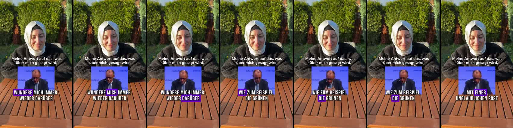
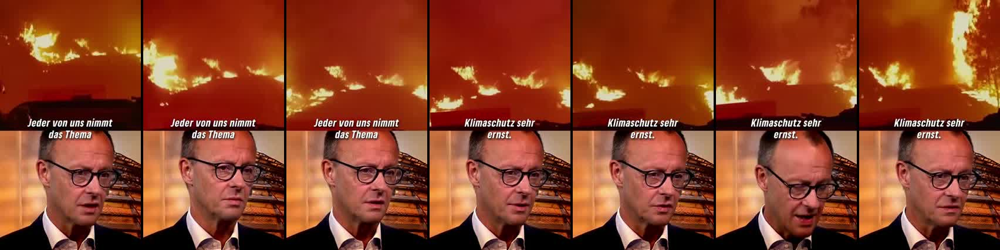
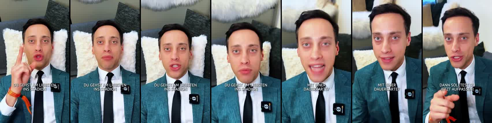

147 Reels aus zwölf Monaten: Formate, Gesichter, Viral-Hits, Flops, Zielgruppen, die neuen Creator, ein Blick auf TikTok und was daraus für 2027 folgt.
erreichen mehr Menschen als der Kanal Follower hat
189 Tsd.
Likes gesamt
7.634 Kommentare
Der Kanal wächst über Gesichter und Collabs, nicht über Grafiken. Neun von zehn Top-Reels zeigen einen Menschen, der direkt spricht, oder einen Moment, über den man reden will.
Alle Reels von @gruenenrw seit 21.10.2025 über Apify (instagram-reel-scraper), dazu Profile von 20 Vergleichs-Accounts. Kosten unter 1 $.
Collab-Reels erscheinen bei beiden Accounts – die Plays zählen gemeinsam.
2 · Zerlegung
Jedes Video lokal geladen und transkribiert (whisper.cpp, Deutsch), Bildschnitte gezählt, Hook (0–3 s) und Kontaktbögen erzeugt. Skript, Format und Zahlen je Reel liegen in reels/ und reels.csv.
3 · Zuordnung
Wer ist zu sehen? Gesichter anhand der Vorschaubilder, Markierungen, Collabs und Transkripte zugeordnet; dazu Format und Thema je Reel. Kommentare: die ≈ 8 neuesten je Reel (1.108 insgesamt), regelbasiert grob eingeordnet.
Was nicht messbar ist
Follower-Verlauf: Instagram zeigt nur den heutigen Stand (35.616). Social Blade und das Webarchiv haben für @gruenenrw keine Historie. Demografie (Alter, Geschlecht, Orte), Shares, Saves, Wiedergabedauer und Werbebudgets sieht nur der Account selbst in den Insights. Zielgruppen sind deshalb aus Themen und Kommentaren abgeleitet. Personen sind per Bild zugeordnet; eine Creatorin (Trend-Reels) ist namentlich nicht markiert.
147 Reels zwischen 21.10.2025 und 20.10.2026. Die Spitzen kommen nicht regelmäßig, sondern in Wellen: Gökçe im März, der Merz-Clip im Juli, Gamescom im August.
Die Interaktionsrate ist im Jahresverlauf gestiegen, von 3,5 % (Nov. 2025) auf 5–6,5 % ab April 2026.
Die Community reagiert also immer stärker auf das, was sie sieht.
Reichweite und Interaktion laufen gegeneinander: Reels, die weit über die Community hinausgehen (Gamescom, Mona-Kandidatur), haben 1–3 %. Reels für die Community haben 8–12 %.
Follower-Analyse · Reichweite jenseits der Follower
Wer sieht die Reels?
20 %
Median-Reel ÷ Follower
ein normales Reel erreicht rund ein Fünftel der Followerzahl
16
Reels über 35.616 Plays
diese Reels müssen Nicht-Follower erreicht haben
16×
größter Hit ÷ Follower
Emine Gökçe: 568.909 Plays
Wo die Reichweite herkommt
Plays im Median, ohne doppelt gepostete Videos
Was das heißt
Die Follower-Kurve selbst ist öffentlich nicht abrufbar. Die Reichweite verrät aber, woher die Zuschauer*innen kommen.
Reels, die bei Tim (103 Tsd.) oder einem anderen Account liegen, erreichen im Median ein Vielfaches der Solo-Posts. Ein Teil dieser Zuschauer*innen folgt danach @gruenenrw.
Für die Follower-Kurve: Insights → Follower → Export (letzte 2 Jahre)
Die Reichweiten-Maschine des Kanals: Gamescom, Fußball-Fankultur, Haftbefehl-Debatte, Hitzewelle. Er spricht direkt, schnell und mit Popkultur-Bezug. Wenn sein Account den Post besitzt, liegt der Median bei rund 36 Tsd. Plays.
ZIELGRUPPE Junge, popkultur- und gaming-affine Menschen (18–34), viele Nicht-Follower. Auch die meisten Gegenstimmen landen bei ihm: Er erreicht Leute außerhalb der grünen Blase.
292 Kommentare in der Stichprobe
STÄRKSTES REEL Ready für Gamescom · 168 Tsd.
Mona Neubaur
Stv. Ministerpräsidentin, Spitzenkandidatin 2027
23Reels
8,6 Tsd.Median
6,1 %Interaktion
Ministerin und Spitzenkandidatin. Ihre Reels erreichen weniger Menschen als Tims, holen aber die höchste Interaktion aller Gesichter. Am stärksten sind Rede-Ausschnitte und Persönliches („Warum ich Politikerin wurde“: 15,9 Tsd.), am schwächsten reine Grafik-Reels.
ZIELGRUPPE Die Kern-Community: Mitglieder, Unterstützer*innen, eher 30+. Die Kommentare sind fast nur Herzen und Zustimmung, dazu Sachfragen zu Energie und Infrastruktur.
Viele Reels (14), aber der niedrigste Median aller Gesichter. Die Reels sind lang (Median 72 s) und fast nur Statement oder Rede. Die Ausnahme ist Albanien steht nicht zum Verkauf (143 Tsd.), getragen von der albanischen Community.
ZIELGRUPPE Communitys mit Migrationsgeschichte (Türkei, Iran, Albanien), dazu die Parteibasis. Wenn sie diese Communitys direkt anspricht, wächst die Reichweite stark.
58 Kommentare in der Stichprobe
STÄRKSTES REEL Albanien · 143 Tsd.
SupportZustimmungKritik am GegnerFrage/DiskussionSonstigesKritik an Grünen
Der „9to5 boy“ aus Düsseldorf stellt sich am 15.09.2026 als neues Gesicht vor (41.576 Plays). Seitdem liefert er News-Explainer und Trends. Seine Reels werden am häufigsten kommentiert, es entstehen Diskussionen.
ZIELGRUPPE Gen Z, 16–25: Erstwählende (in NRW 2027 erstmals ab 16!). In den Kommentaren stehen Fragen und Meinungen statt Herzen.
Er macht Trend-Formate („Welche Zahl bin ich“, 20-€-Traumstadt) und Explainer (Rhein-Niedrigpegel, KI-Wahlomat). Den Rhein-Pegel-Explainer haben mehr Menschen gesehen als der Kanal Follower hat (41.054), und er erreicht die höchste Interaktion aller Explainer (10 %).
ZIELGRUPPE Junge Erwachsene, eher unpolitisch-neugierig. Hoher Anteil an Fragen und eigenen Meinungen in den Kommentaren.
43 Kommentare in der Stichprobe
STÄRKSTES REEL Rhein-Niedrigpegel · 41 Tsd.
SupportZustimmungKritik am GegnerFrage/DiskussionSonstigesKritik an Grünen
Seit Januar Ministerin für Kinder, Jugend, Familie. Sie erklärt Zahlen und Programme (106 Mio. für Kitas, 420 Mio. für Familien). Die Reels sind solide, aber lang (Median 78 s), und sie wiederholen das Zahl-Grafik-Muster.
ZIELGRUPPE Eltern und Fachpublikum (Kita, KiBiz). In den Kommentaren stehen konkrete, teils kritische Fachfragen.
41 Kommentare in der Stichprobe
STÄRKSTES REEL Verena bringt NRW zusammen · 15 Tsd.
Benjamin Limbach
Justizminister
7Reels
5,9 Tsd.Median
4,5 %Interaktion
Er hat ein klares Profil: Schutz von Frauen (Spanneraufnahmen, K.O.-Tropfen, Karneval). Seine Rede „Nein sagen“ kam auf 25.521 Plays mit 9,7 % Interaktion. Auf Instagram ist er selbst kaum präsent (889 Follower).
ZIELGRUPPE Frauen und feministisch Interessierte. Die Kommentare sind fast nur Dank und Zustimmung, mit kaum Gegenwind.
65 Kommentare in der Stichprobe
STÄRKSTES REEL Nein sagen Rede · 26 Tsd.
Oliver Krischer
Minister Umwelt & Verkehr
8Reels
4,6 Tsd.Median
5,3 %Interaktion
Er steht für Verkehr und Klima: Azubi-Ticket, mehr Züge, Hambi. Die Reichweite ist niedrig, aber zwei Reels gehören zu den Interaktions-Spitzenreitern (12,3 % und 10,5 %).
ZIELGRUPPE Pendler*innen und Klimabewegte. Viele Sachbeiträge (ÖPNV-Erfahrungen), etwas mehr Kritik als bei anderen.
51 Kommentare in der Stichprobe
STÄRKSTES REEL Hambi bleibt (Collab) · 12 Tsd.
SupportZustimmungKritik am GegnerFrage/DiskussionSonstigesKritik an Grünen
Jedes Creator-Reel, Plays auf Instagram (chronologisch)
TorbenJulianbeide
Lesart
Seit Julians Start am 15.09. zeigt mehr als jedes zweite Reel des Kanals einen der beiden (11 von 21).
Zwei Ausreißer nach oben: Torbens Rhein-Reel (41 Tsd., auf TikTok sogar 74 Tsd.) und Julians Vorstellung (42 Tsd., über seinen eigenen Account). Dazu kommt der KI-Wahlomat (18,8 Tsd.). Der Rest liegt zwischen 3,7 und 9,4 Tsd.
Die Creator sprechen deutlich schneller als die Politiker*innen. Das passt zu TikTok-Sehgewohnheiten.
Reichweite kommt bisher von Ort & Anlass, nicht vom Format
Torben und Julian holen pro 1.000 Plays rund doppelt so viele Kommentare wie Tim und Mona. Die Leute antworten auf Fragen („Was denkt ihr?“), streiten über Social-Media-Verbote und Spritpreise. Das ist der Kanal-Teil, in dem Meinungen entstehen.
Aber weniger Reichweite als Tim
Tims Reels erreichen im selben Zeitraum mehr als doppelt so viele Menschen, weil sie meist über seinen 103-Tsd.-Account laufen. Die Creator-Reels laufen fast alle nur über @gruenenrw. Dabei hat Julian selbst 28 Tsd. Follower.
Gleicher Zeitraum (18.08.–20.10.2026), ohne doppelt gepostete Videos. Ein Reel kann mehreren Personen zählen.
Ort + Beweisstück + Gegner-Zitat: der tote Wels im ausgetrockneten Rhein, dazu Merz’ „nicht so im Alarmismus unterwegs“. Ergebnis: 41 Tsd. auf Instagram, 74 Tsd. auf TikTok, 10 % Interaktion.
Energie und Tempo, viele Gesten, rund 240 Wörter pro Minute. Grafiken (KI-Wahlomat) und Green Screen machen Zahlen sichtbar.
Stärkstes Gesicht auf TikTok: Mit dem Umfrage-Video („Manifesting 20 %“, 37 Tsd., nur auf TikTok) kommt über ein Viertel aller TikTok-Plays des Jahres aus Videos mit Torben.
Was bremst
Trends zu lang: „Welche Zahl bin ich“ dauert 105 s, ein Trend lebt von 15–30 s (1,8 % Interaktion, 3,7 Tsd.).
Meinung ohne Gegner: Olympia in NRW (6,4 Tsd.) ist sympathisch, aber ohne Konflikt und ohne Bild vom Ort.
Repost des Rhein-Reels sechs Tage später: nur 4,4 Tsd. und viele Klimaleugner-Kommentare.
Nächste Schritte
Serie „Vor Ort“: jede Woche ein Ort in NRW, an dem Politik sichtbar wird (Baustelle, Schulhof, Funkloch, Hitze-Hotspot).
Trends unter 30 s, Politik nur als Pointe am Ende.
TikTok zuerst denken: dort ist Torben das Zugpferd; Instagram als Collab über einen eigenen Account.
Klares, wiedererkennbares Format: frontal vor heller Wand, Wort-Untertitel, Zeitungsausschnitte und Porträts als Sticker. Schnell produziert, fast täglich möglich.
Gespräch statt Applaus: die höchste Kommentarquote des Kanals, Social Media ab 13 und Tankrabatt lösen echte Debatten aus. Interaktion bis 7,5 % (Energie-Beef).
Eigene Community: Die Vorstellung über @juliankmps erreichte 42 Tsd. auf Instagram und 7 Tsd. auf TikTok, Kommentare wie „Topzugang“.
Was bremst
Reichweiten-Deckel bei 4–7 Tsd.: Nur 1 von 10 Reels lief als Collab über seinen eigenen 28-Tsd.-Account, nämlich die Vorstellung mit 42 Tsd. Zwei weitere sind nur markiert.
Ein Ort, eine Einstellung: Ohne Bildwechsel wird es nach 20 s gleichförmig (Tankrabatt: 46 s, 4,5 Tsd.).
Trend ohne Erklärung: „Fliegende Autos vor Frauenrechten“ (7 s) wurde missverstanden („Checke, aber wie ist das gemeint?“).
Nächste Schritte
Jedes Reel als Collab mit @juliankmps: Das ist der schnellste Hebel, den das Team selbst in der Hand hat.
Fester Serientitel und raus aus der Wohnung: Das POV-Tanken-Reel an der Tankstelle lag bei 7,6 Tsd.
Duo mit Torben: Die 20-€-Traumstadt (9,4 Tsd.) ist das stärkste Creator-Reel ohne Sonderanlass. Daraus lässt sich eine Challenge-Serie machen.
zweite Veröffentlichung / Soloerste Veröffentlichung / mit Collab
Der Befund
Acht Videos wurden zweimal veröffentlicht. Die zweite Fassung erreicht nur einen Bruchteil, 2–17 % der ersten und oft unter 1.000 Plays.
Bei den Tim-Reels lief die erste Fassung als Collab mit @tim_acht, die zweite solo. Zum Teil sehen sie wie Testreels aus (werden nur Nicht-Followern gezeigt).
Folge: Ein Video, das einmal lief, ist für Instagram „verbraucht“. Ein Repost bringt keine zweite Chance, er drückt nur den Durchschnitt.
lieber 1× richtig: mit Collab, starkem Hook, gutem Timing
Plays im Median je Format (ab 3 Reels; TV-Clips: 2 Reels, Median 245 Tsd.)
Lesart
Events vor Ort (Gamescom, CSD, Demos) und Reden mit einem klaren Satz liegen deutlich über dem Median.
Statements sind das häufigste Format (50 Reels). Sie streuen am stärksten: von 2 Tsd. bis 569 Tsd. Ob das Reel läuft, entscheidet die Person, nicht das Format.
Grafik- und Text-Reels und Gäste liegen unter dem Median. Eine Ausnahme ist ICE/AfD-Verbot (116 Tsd.): Dort trägt ein Aufreger-Thema.
Die zwei TV-Clips (Merz) sind Ausreißer nach oben. Mit zwei Fällen ist das noch keine Regel.
Emine · Talking Head / Statement Collab · @emi.chem postet · 49 s · ER 8,1 %
2
481 Tsd.
Merz-Clip „Herr Strempel“
31.07.2026
ohne Person · TV-Clip / Zusammenschnitt solo · 68 s · ER 8,1 %
3
171 Tsd.
Spitzenkandidatur LTW 2027
05.10.2026
Mona · Talking Head / Statement Collab · @monaneubaur postet · 25 s · ER 1,3 %
4
168 Tsd.
Ready für Gamescom
26.08.2026
Ricarda + Tim · Event & Vor-Ort Collab · @tim_acht postet · 8 s · ER 2,8 %
5
143 Tsd.
Albanien
04.07.2026
Yazgülü · Talking Head / Statement Collab · gruenenrw postet · 78 s · ER 5,8 %
6
140 Tsd.
Fankultur retten
25.11.2025
Tim · Talking Head / Statement Collab · @tim_acht postet · 20 s · ER 2,6 %
7
116 Tsd.
ICE AfD-Verbot
26.01.2026
ohne Person · Grafik- & Text-Reel solo · 48 s · ER 4,5 %
8
101 Tsd.
Abtreibungsverbot Demo
05.02.2026
Tim · Event & Vor-Ort Collab · @tim_acht postet · 90 s · ER 5,3 %
9
75 Tsd.
Baerbock auf der Gamescom
27.08.2026
Tim + Ricarda · Event & Vor-Ort Collab · gruenenrw postet · 12 s · ER 2,8 %
10
49 Tsd.
Hat die SPD blau gemacht
03.07.2026
Tim · Talking Head / Statement Collab · @tim_acht postet · 67 s · ER 9,2 %
Es gibt drei Wege zum Hit: eine persönliche Antwort auf einen Angriff (Gökçe), ein Gegner-Zitat, das sich selbst entlarvt (Merz), und ein Popkultur-Moment mit bekannten Gesichtern (Gamescom, Fankultur).
8 der Top 10 laufen als Collab mit einem Account, der eigene Reichweite mitbringt: Tim (103 Tsd.), Emine Gökçe (29 Tsd.), Mona Neubaur (20 Tsd.). Der Algorithmus zeigt das Reel beiden Followerschaften.
2 · Konflikt statt Programm
Die Hits reagieren auf etwas: einen Angriff, ein Merz-Zitat, ein Verbot (Fankultur, Abtreibung, AfD). Programmpunkte („31,2 Mrd.“) schaffen es nie in die Top 20.
3 · Der erste Satz ist der Hook
Kein Logo-Intro, keine Begrüßung. Die Top-Reels starten mitten im Satz oder mitten in der Szene. Wer in den ersten 1,5 Sekunden nicht weiß, worum es geht, wischt weiter.
4 · Communitys teilen
Albanien (143 Tsd.), Iran-Rede (47 Tsd.), Pride (44 Tsd.): Diese Reels wurden in Communitys herumgereicht, die sich direkt angesprochen fühlen. Das sind Reichweiten-Inseln außerhalb der grünen Blase.
Emine Gökçe: „Wir sind nicht leise, ihr hört nur nicht zu“
HOOK 0–3 S

Skript & Bild
49 s. Die ersten 19 s laufen als Bild-im-Bild: ein Politiker-Clip (vermutlich Friedrich Merz) behauptet, Grüne würden beim Frauenbild im Islam „plötzlich ganz still“. Oben steht dauerhaft „Meine Antwort auf das, was über mich gesagt wird.“ Dann folgt die Antwort, frontal im Garten, Wort-für-Wort-Untertitel mit lila Markierung: „Ich bin Muslima, ich trage Kopftuch und ich setze mich für Gleichberechtigung ein. Alles auf einmal. Verrückt, oder?“
Zahlen
569 Tsd. Plays, 44 Tsd. Likes, 1.781 Kommentare. Das ist das 16-Fache der Follower von @gruenenrw. Gepostet von @emi.chem als Collab.
Warum es funktioniert
Ein Angriff, eine Betroffene, eine ruhige und schlagfertige Antwort. Die Botschaft ist an eine Person gebunden, nicht an ein Programm. Die Untertitel tragen das Reel auch ohne Ton. Die Pointe („Alles auf einmal“) eignet sich zum Teilen.
Learning
Kandidat*innen mit eigener Geschichte sind die stärksten Absender. Antwort-Videos auf Angriffe sollten schnell kommen (24–48 h), vom Account der Person gepostet werden und @gruenenrw als Collab haben.
„Und die Welt, Herr Strempel, geht nun in der Tat morgen nicht unter“
HOOK 0–3 S

Skript & Bild
68 s, kein einziges eigenes Wort. Geteilter Bildschirm: oben Waldbrände, Fluten, Notunterkünfte, unten Talkshow-Zitate von Merz und anderen Unionspolitiker*innen („nicht so im Alarmismus unterwegs“, „pseudo-religiöse Bedeutung“, „Windkrafträder wieder abbauen“). Die Pointe steht am Schluss: „Die Welt geht nun in der Tat morgen nicht unter.“
Zahlen
481 Tsd. Plays, 7,7 % Likes, 1.925 Kommentare, die meisten im ganzen Jahr. 66-mal so viele Plays wie das Median-Reel.
Warum es funktioniert
Bild und Ton widersprechen sich, und das versteht man ohne Ton. Der Gegner liefert die Argumente selbst, die Grünen müssen nichts behaupten. Das erzeugt Empörung und Teilen über die eigene Blase hinaus.
Learning
Zusammenschnitte sind teuer in der Recherche, aber das stärkste eigene Format. Wichtig: Quellen in der Caption (hier 15 Links) schützen vor dem Vorwurf, Zitate aus dem Kontext zu reißen.
25 s, Ankündigung der Spitzenkandidatur. Schauplatz ist eine Imbissbude („Profi Grill“): Pommes, Gäste, eine Kreidetafel „Heute: Mona für NRW“. Der Schnitt ist sehr schnell (1,1 s pro Einstellung). Kernsatz: „Ich trete erneut an, um zuzuhören, anzupacken und zu liefern.“
Zahlen
171 Tsd. Plays, aber nur 1,3 % Interaktion und 27 Kommentare. Das ist der niedrigste Wert aller Top-10-Reels.
Warum es funktioniert
Das Setting ist nahbar statt Ministerium, das Tempo hoch, die Frage am Schluss lädt ein. Die große Reichweite bei sehr wenig Interaktion spricht aber für bezahlte Ausspielung oder Ausspielung an viele Nicht-Fans. Das lässt sich nur in den Insights prüfen.
Learning
Das Setting passt. Für Kommentare fehlt ein Anlass: eine konkrete Frage („Was soll Mona als Erstes anpacken?“) statt „Bist du dabei?“.
8,5 s, Trend-Audio („Mo’ Money Mo’ Haters“), nur ein Text-Overlay: „Ready für Gamescom“. Tim und Ricarda Lang machen den Get-ready-Übergang, danach sieht man sie kurz an der Konsole. Es gibt keine Botschaft und kein Programm.
Zahlen
168 Tsd. Plays, 2,7 % Interaktion. Gepostet von @tim_acht mit @gruenenrw und Ricarda Lang. Zusammen mit den anderen Gamescom-Reels kommt der Kanal auf knapp 290 Tsd. Plays in einer Woche.
Warum es funktioniert
Das Reel ist kurz und wird deshalb oft wiederholt angesehen. Es nutzt einen Trend-Sound, zeigt zwei bekannte Gesichter und spielt an einem Ort, an dem die Zielgruppe ohnehin ist. Die Gamescom ist ein Rahmen, den Gaming-Accounts weitertragen.
Learning
Popkultur-Events sind Reichweiten-Booster für die Marke, nicht für Inhalte. Darauf sollte ein inhaltliches Reel folgen (z. B. Games-Standort NRW), solange die Aufmerksamkeit da ist.
78 s, Staffel-Format: Yazgülü Zeybek und vier Stimmen aus der albanischen Community sprechen abwechselnd Satz für Satz, alle mit Handmikro am selben Ort. Dazwischen Protestbilder, Flamingos, die Lagune und ein Banner „Albania is not for sale“. Schluss: „Wir in NRW haben die größte albanische Community in Deutschland … Bleibt stark, kämpft weiter.“
Zahlen
143 Tsd. Plays, 5,7 % Interaktion. Das ist das 50-Fache von Yazgülüs Median. Sieben Accounts sind markiert.
Warum es funktioniert
Eine Community sieht sich gemeint und teilt das Reel in eigene Netzwerke. Durch viele Gesichter und viele Markierungen startet das Reel mit vielen Followerschaften. Der Schnitt ist schnell (1,8 s pro Einstellung) trotz 78 s Länge.
Learning
Das ist die Blaupause für Yazgülü und für Diaspora-Themen: mit der Community statt über sie sprechen und alle Beteiligten als Collab markieren.
Tim: „Nichts mehr mit Karte abgeben an Onkel Heinz“
HOOK 0–3 S

Skript & Bild
19,7 s, ein Ort, ein Take: Tim im petrolgrünen Anzug auf dem Sofa, Laptop auf dem Schoß. Statt Schnitten gibt es Zoom-Sprünge (nah → halbnah), die Schlagzeile „Rettet die Fankultur!“ und Wort-Untertitel. Drei Sätze: das Problem (personalisierte Dauerkarte), ein Bild aus dem Alltag („Karte abgeben an Onkel Heinz“), dann der Aufruf (Link in Bio, unterschreiben).
Zahlen
140 Tsd. Plays, 2,5 % Interaktion, gepostet von @tim_acht. Das Thema betrifft Fans aller Vereine, nicht nur Grünen-Wähler*innen.
Warum es funktioniert
Es spricht ein konkretes Ärgernis einer großen Gruppe an, mit einem Gegner (Bundesinnenminister) und einer Handlung (Petition). „Onkel Heinz“ macht die Regel greifbar. Die Kürze sorgt für Wiederholungen.
Learning
Das ist die Vorlage für Mitmach-Reels: unter 20 s, Problem → Alltagsbild → Aufruf. Gut übertragbar auf Deutschlandticket, Mieten, Kita-Beiträge.
69 s, Yazgülü Zeybek frontal vor grüner Wand, ein Ort, nur Zoom-Sprünge und ein kurz eingeblendeter Zeitungsausschnitt (Ø 5,8 s pro Einstellung). Der Einstieg „Die Gasspeicher sind quasi leer“ ist eigentlich stark. Danach folgen eine Minute Fachsprache (GEG-Reform, fossile Abhängigkeit, Effizienz, Verlässlichkeit) und ein Petitions-Aufruf nur in der Caption.
Zahlen
2.057 Plays, 90 Likes, 1 Kommentar. Das ist rund ein Siebzigstel des Albanien-Reels derselben Person.
Warum es untergeht
Es ist kein Mensch betroffen, es gibt kein Bild für die „Kostenfalle“ und kein Alltagsbeispiel wie „Onkel Heinz“ beim Fankultur-Reel. Das Kürzel GEG versteht außerhalb der Fachwelt kaum jemand. Ein Collab-Partner fehlt.
So wäre es besser
Unter 30 s, mit einer Mieterin oder einem Handwerker vor der Gasheizung: „Das wird für dich jedes Jahr teurer“. Dann ein Satz zur Forderung und der Petitionslink als Collab mit einem Verbraucher- oder Handwerks-Account.
Die sechs schwächsten Reels des Jahres sind Wiederholungen (126 bis 1.332 Plays). Instagram spielt ein bereits gelaufenes Video kaum noch aus.
Solo statt Collab
Dieselben Personen erreichen ohne Collab-Partner nur einen Bruchteil. Yazgülü Zeybeks Solo-Statements liegen um 2–3 Tsd., mit der Albanien-Community bei 143 Tsd.
Lang, ruhig, erklärend
Statements über 60 s ohne Bildwechsel und mit Programmsprache (GEG-Reform, Greentech, „Frauen schützen auch im Internet“) bleiben bei 2–3 Tsd.
Meme ohne Absender
Ein Meme ohne Gesicht (Tankrabatt-Falafel: 2.128 Plays, 0,9 % Interaktion) wird nicht als Grüne-NRW-Inhalt erkannt und kaum geteilt.
Länge und Schnitttempo sind fast egal (Median 47 s, 2–4 s pro Einstellung leicht vorn). Entscheidend ist, wer spricht und was passiert. Gepostet wird meist nachmittags (16–19 Uhr) und kaum am Wochenende. Dabei liegen die wenigen Samstags- und Sonntags-Reels über dem Median.
Du-Ansprache in den ersten 3 s „Du gehst …“, „Hast du …“
20
7,5 Tsd.
7,7 Tsd.
1,4
1,6
Frage in den ersten 3 s Hook endet mit „?“
20
8,8 Tsd.
7,5 Tsd.
1,4
1,5
Kommentar-Aufruf in der Caption „Schreibt’s in die Kommentare 👇“
12
5,3 Tsd.
8,7 Tsd.
2,1
1,4
Frage in der ersten Caption-Zeile
39
8,6 Tsd.
7,5 Tsd.
1,7
1,4
Link in Bio / Petition „Unterschreib …“
24
7,5 Tsd.
8,4 Tsd.
1,4
1,6
Fremd-Musik / Trend-Audio statt Originalton
10
6,3 Tsd.
8,5 Tsd.
1,2
1,6
Ein ausdrücklicher Kommentar-Aufruf bringt rund 50 % mehr Kommentare, aber nicht mehr Plays. Du-Ansprache, Frage-Hook und Trend-Audio sind für sich allein keine Hebel: Es zählt, wer spricht und worüber.
Mediane, ohne doppelt gepostete Videos. Hook = transkribierte Wörter der ersten 3 s (nur Reels mit Sprache). Kleine Gruppen: Tendenzen, keine Beweise.
1.108 Kommentare (Stichprobe: neueste je Reel), grob eingeordnet
SupportZustimmungKritik am GegnerFrage/DiskussionSonstigesKritik an Grünen
801
verschiedene Kommentierende
in der Stichprobe
39 %
Kommentare von Wiederkehrern
128 Menschen kommentieren mehrfach
2,6 %
ablehnend gegenüber Grünen
Obergrenze, Regel-Einordnung
Lesart
Die Stichprobe zeigt eine sehr freundliche Community: Herzen, Sonnenblumen, „Danke“. Ablehnung gegenüber den Grünen liegt höchstens im niedrigen einstelligen Prozentbereich. Ein Grund ist auch die Moderation („Kein Bock auf Hate“).
39 % der Kommentare kommen von Menschen, die mehrfach kommentieren. Es gibt einen festen Kern.
Die Creator-Reels haben den höchsten Anteil an Fragen und Meinungen. Das ist das Publikum, das noch nicht überzeugt ist.
Mitglieder und Stammwähler*innen, eher 30+. Sie liken zuverlässig, kommentieren mit Emojis und tragen die hohe Interaktionsrate. Sie wollen Erfolge sehen („Wir haben geliefert“) und Rückenwind spüren.
Die Popkultur-Jungen
Tim · Gamescom · Fankultur · Julian
18–30, gaming-, fußball- und musikaffin, oft keine Follower. Sie sorgen für die großen Reichweiten, interagieren aber weniger. Hier finden sich Erstwählende für 2027.
Die Communitys
Albanien · Iran · Türkei · Queer
Diaspora- und queere Communitys, die Reels in eigene Netzwerke weitertragen, wenn sie direkt angesprochen werden. Das ist die größte ungenutzte Reichweitenquelle.
Die Gegner-Beobachter*innen
Merz-Clips · AfD · Gökçe
Politisch Interessierte aus der Mitte, die vor allem auf Konflikte mit CDU und AfD reagieren. Viele Kommentare und Shares, aber eine flüchtige Bindung.
Jedes Reel als Collab. Mit Tim, Mona, Julian, Emine oder lokalen Accounts. Solo-Posts erreichen im Median nur einen Bruchteil.
Nie doppelt posten. Lieber neu schneiden, mit neuem Hook und neuem Absender. Ein zweiter Upload bringt nur 2–17 % der Reichweite.
Konflikt vor Programm. Ein Zitat, ein Angriff oder ein Verbot als Einstieg, das Programm als Antwort darauf. „31,2 Mrd.“ gehört in Satz 3, nicht in die Schlagzeile.
Yazgülü neu aufstellen. Kürzer (unter 40 s), mit Community-Bezug (Türkei, Iran, Albanien) und Collabs mit Diaspora-Accounts. Das Albanien-Reel zeigt das Potenzial: 143 Tsd.
Mona als Gesicht der Kampagne. Die Interaktion ist hoch, die Reichweite fehlt. Mehr Rede-Momente, persönliche Formate und Collabs mit Tim und Julian.
Creator-Formate als Serie. Julian und Torben mit festen Serien („Kurz erklärt“, „Was heißt das für dich?“). Ihre Kommentare zeigen: Hier erreicht ihr Unentschlossene.
Erstwählende ab 16. Bei der Landtagswahl 2027 wählen erstmals 16-Jährige. Das spricht für Gen-Z-Formate von Julian und Tim mit Bezug zu Schule, Ausbildung und Wohnen.
Hook in 1,5 Sekunden. Kein Intro, keine Begrüßung: mitten in der Szene starten, Schlagzeile groß, erster Satz als These.
Communitys gezielt ansprechen. Reels für die Diaspora und für queere Menschen mit Collab-Partnern aus der Community. Das sind Reichweiten-Inseln.
Insights exportieren. Follower-Verlauf, Demografie, Shares, Saves und Watchtime aus den Instagram-Insights ergänzen. Erst damit lassen sich Zielgruppen messen statt schätzen.
Auf TikTok erreicht ein normales Video nur rund 1.000 Plays, ein Siebtel von Instagram. Fast die ganze Reichweite kommt von vier Videos (Albanien, Rhein, Rosemondy, Umfrage). Sie machen zusammen rund 60 % aller TikTok-Plays aus.
Wer schaut, interagiert aber stark: Die Interaktion liegt bei über 12 %, und Shares und Saves sind sichtbar (2.237 Shares, 2.026 Saves).
Seit Juli steigt die Monatsreichweite, getragen von Community- und Creator-Videos.
Unter den fünf stärksten TikToks sind zwei von Torben und eines mit Rosemondy, einer jungen Ideengeberin. Auf TikTok zählen Menschen, die wie die Zielgruppe aussehen, mehr als Ämter.
Communitys tragen auch hier
Albanien ist auch auf TikTok die Nummer 1 (86,8 Tsd., 1.068 Shares). Diaspora-Communitys teilen auf TikTok fast so stark wie auf Instagram, ganz ohne Collab-Funktion.
Was TikTok jetzt braucht
Eigene TikTok-Formate mit Torben und Julian statt Zweitverwertung, Antworten auf Kommentare per Video (die Funktion wird schon genutzt) und Tim mit eigenem TikTok-Auftritt, weil seine Instagram-Reichweite dort nicht ankommt.
Gleiches Video: Plays TikTok ÷ Instagram (83 Paare, Median 14 %)
Lesart
Im Median erreicht dasselbe Video auf TikTok nur etwa ein Siebtel der Instagram-Plays. Die Ausnahmen zeigen, was TikTok belohnt:
Mehr als auf Instagram: junge Stimmen (Rosemondy, Torben), Trend-Formate („Welche Zahl bin ich“) und Reizthemen mit Diskussion (AfD, Gleichstellung: über 300 Kommentare).
Fast nichts: Tim-Reels und Gamescom (2–5 %). Auf Instagram leben sie von Tims Collab-Reichweite, die es auf TikTok nicht gibt. Auch die großen Instagram-Hits ohne Gesicht (Merz-Clip, ICE) kommen auf TikTok nur auf 2–3 %.
TikTok braucht eigene Formate, nicht nur Zweitverwertung
Plays: Wiedergaben laut Instagram (videoPlayCount), Stand 20.10.2026. Collab-Reels zählen gemeinsam für beide Accounts. Interaktionsrate: (Likes + Kommentare) / Plays. Shares und Saves sind öffentlich nicht sichtbar. Median: mittlerer Wert, robust gegen Ausreißer. Viral: ≥ 3× Median (≥ 21.714 Plays). Flop: < ⅓ Median (< 2.413 Plays). Kommentare: nur die ≈ 8 neuesten je Reel, regelbasiert eingeordnet. Das ist eine Tendenz, keine Messung.